前後對比效果展示 • 多平台一鍵複製 (ChatGPT / Gemini / ComfyUI)
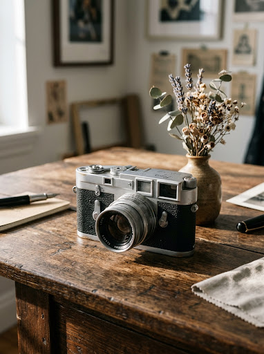
原圖 (Before)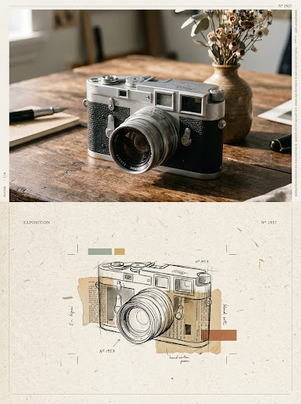
生成效果 (After)3:4 比例上下 50/50 雙拼海報。上半部保留原相寫實主體與畫廊色調；下半部大膽去背，以手繪線條、撕紙拼貼、少量提煉色塊與大量留白重構主體。
Turn the uploaded photograph into an independent high-end exhibition design poster in a 3:4 vertical composition, split into two regions of exactly equal height (50% upper, 50% lower). Upper half: Display the original photograph, faithfully preserving the subject's identity, pose, realistic skin/material textures, and natural lighting with refined editorial grading suitable for a high-fashion or contemporary art magazine. Extend background naturally without distortion. Lower half: A minimalist mixed-media collage on textured paper directly reinterpreting the subject from the upper half. Eliminate cluttered background and unnecessary detail through bold subtraction. Reconstruct only the primary gesture and contours using loose hand-drawn graphite/ink linework, torn paper fragments, delicate newsprint pieces, and 2 to 4 restrained, purified color blocks extracted from the photo. Emphasize extensive deliberate whitespace (negative space) and off-center placement with a small-subject, large-space balance. Finish with elegant, subtle editorial typography (fine captions, numbers, or tiny notes). Strictly avoid: 3D render appearance, smooth vector graphics, childish cartoon style, cheap scrapbook aesthetics, oversaturation, or muddy dark tones.
3:4 vertical composition, split panel diptych, upper half realistic photography, lower half mixed media art on paper, (upper panel: high-end gallery photography, authentic textures, refined color grading, editorial art exhibition photo:1.1), (lower panel: mixed media collage, torn handmade paper, newsprint fragments, loose graphite pencil lines, ink sketch, minimalist color blocks, restrained palette:1.2), deliberate negative space, heavy whitespace, airy composition, small subject wide breathing room, elegant editorial typography, fine numbers and printed text fragments, artistic poster design, masterpiece, best quality, ultra-detailed
(worst quality, low quality:1.4), (smooth vector:1.2), 3D render, cgi, plastic, glossy, childish cartoon, comic, cheap scrapbook, crowded composition, cluttered background, oversaturated colors, muddy dark tones, ugly typography, deformed anatomy, bad proportions, watermark, logo
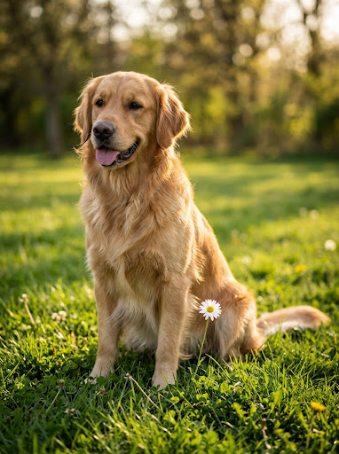
原圖 (Before)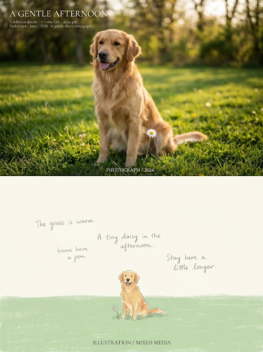
生成效果 (After)3:4 直式構圖，上下 50/50 雙拼。上半部為寫實藝術展覽攝影；下半部轉化為「上部大面積負空間 ＋ 中部微縮敘事主體 ＋ 下部寬筆觸色域基座 (Visual Anchor)」的稚拙繪本插畫，充滿手繪抖動線條、粉彩水粉質感與療癒詩性語境。
Turn the uploaded photograph into an independent high-end exhibition poster in a 3:4 vertical composition, split into two regions of exactly equal height (50% upper, 50% lower). Upper half: Faithfully display the original photograph, preserving the subject's identity, pose, real textures, and natural lighting with refined, subtle editorial color grading suitable for an art magazine or exhibition. Naturally extend the environment without distorting the subject. Lower half: Reconstruct the photograph's key subject into a charming Naïve Mixed-media Picture-Book Illustration. Boldly subtract clutter and irrelevant background. Use a three-tier vertical compositional structure: generous deliberate negative space at the top, a distinctly miniaturized subject in the middle, and a broad, textured horizontal color block at the bottom acting as a visual anchor (representing ground, meadow, water, or shadow). Render with loose, slightly trembling hand-drawn outlines, flat gouache brushstrokes, delicate crayon/pastel grain, and subtle paper collage textures. Extract 2 to 4 gentle, soft colors from the original photo with muted saturation and soft brightness. Integrate sparse, handwritten poetic notes or tiny caption text naturally into the negative space. The mood should be gentle, warm, relaxing, and poetic. Strictly avoid: 3D render, shiny vectors, heavy realistic oil painting, crowded composition, full-frame clutter, commercial typography, muddy dark tones, or cheap cartoon templates.
3:4 vertical composition, split panel diptych, upper half realistic photography, lower half naive picture book illustration, (upper panel: high-end gallery photography, authentic textures, refined color grading, editorial art exhibition photo:1.1), (lower panel: naive mixed-media picture book illustration, gouache broad brushstrokes, crayon pastel grain, loose trembling hand-drawn line art, textured color block visual anchor base, miniature small subject, wide airy negative space, gentle poetic storybook aesthetic:1.3), soft muted color palette, tender and healing atmosphere, delicate handwritten notes, minimalist editorial poster design, masterpiece, best quality, ultra-detailed
(worst quality, low quality:1.4), (smooth vector:1.2), 3D render, cgi, plastic, glossy, heavy realistic oil painting, detailed background clutter, crowded frame, commercial banner text, harsh lighting, oversaturated neon colors, muddy gray, ugly anatomy, watermark, logo
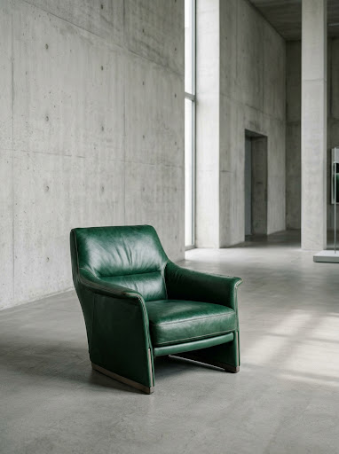
原圖 (Before)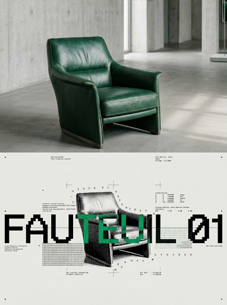
生成效果 (After)3:4 直式構圖，上下 50/50 雙拼。上半部為極簡寫實展覽攝影；下半部將主體重構為「位圖柵格化 ＋ 字符/網點重構 ＋ 實驗字體排版」，呈現極大留白、瑞士平面設計秩序感與 Lo-fi 數位印刷美學。
Turn the uploaded photograph into an independent high-end post-digital design exhibition poster in a 3:4 vertical composition, split into two regions of exactly equal height (50% upper, 50% lower). Upper half: Faithfully display the original photograph, preserving the subject's identity, pose, realistic textures, and natural lighting with refined editorial grading suitable for a contemporary art exhibition or design archive magazine. Extend the environment naturally without distortion. Lower half: Reconstruct the primary subject into an avant-garde Post-Digital Experimental Poster using Bitmap Rasterization, Typographic Halftone, and Dithering. Boldly strip away all background clutter. The reconstructed image must be composed of characters, symbols, and pixel dot-matrix grids rather than continuous tones: denser typographic glyphs and halftone dots form deep shadows, while sparse characters and open negative space form the highlights. The subject should be scaled down with immense deliberate whitespace (negative space) for extreme breathing room. Feature striking, integrated Bitmap Typography and Dot-matrix experimental text that tightly interlocks and overlaps with the dithered graphic. Palette is restrained monochrome (black, white, gray) with 1 to 2 vibrant accent colors extracted directly from the photo applied sparingly to the typography or key halftone layers. Gritty low-fi scanner texture, sharp raster dither, clean structured layout. Strictly avoid: Smooth vector graphics, standard cartoon style, realistic repainting, messy random color noise, excessive uncontrolled glitch, crowded background, or generic corporate poster templates.
3:4 vertical composition, split panel diptych, upper half realistic photography, lower half post-digital graphic design poster, (upper panel: high-end gallery photography, authentic textures, refined color grading, editorial art exhibition photo:1.1), (lower panel: post-digital experimental poster, bitmap rasterization, typographic halftone, dithered pixel grid, ascii character art, dot-matrix textures:1.3), minimalist monochrome base with vibrant spot color accent, integrated bold bitmap typography, tight typographic interplay, miniature subject, vast deliberate negative space, clean editorial whitespace, swiss graphic design influence, high contrast, masterpiece, best quality, ultra-detailed
(worst quality, low quality:1.4), (smooth vector:1.2), 3D render, cgi, glossy, standard cartoon, full detailed realistic painting, cluttered background, chaotic color noise, messy broken glitch, muddy colors, generic banner template, watermark, logo
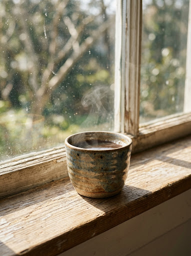
原圖 (Before)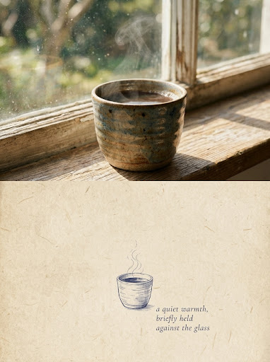
生成效果 (After)3:4 直式構圖，上下 50/50 雙拼。上半部為獨立攝影集質感原照；下半部將主體高度符號化為「暖米色舊紙底 ＋ 單一克制冷色 (靛藍/灰紫) 纖細線條 ＋ 超大面積留白」的詩性觀念小品，散發私人日記與詩集插畫般的安靜餘韻。
Turn the uploaded photograph into an independent high-end conceptual design poster in a 3:4 vertical composition, split into two regions of exactly equal height (50% upper, 50% lower). Upper half: Faithfully display the original photograph, preserving the subject's identity, pose, realistic textures, and natural lighting with refined editorial grading suitable for an independent art publication or photography monograph. Extend the environment naturally without distortion. Lower half: Reconstruct the emotional essence and metaphor of the photograph into a Minimalist Poetic Conceptual Vignette on aged paper. Boldly eliminate all background and secondary details. Treat the subject as a miniaturized, symbolic vignette positioned subtly off-center within immense, deliberate whitespace (negative space) that evokes silence, distance, and psychological pause. Render with delicate, fine hand-drawn ink linework, subtle silhouettes, and quiet contour traces. The background must be a warm off-white, beige, or natural raw paper tone. The illustration and text must strictly use a single restrained, low-saturation cool hue (muted indigo, deep ink blue, or slate purple-gray) creating a gentle warm-cool contrast through linework density and paper transparency. Integrate sparse, whispered literary phrases or poetic fragments quietly tucked into the negative space with understated typewriter or manuscript-like serif typography. The overall feeling is like an intimate personal diary, poetry chapbook, or psychological visual archive. Strictly avoid: Scene replication, cluttered background, full-frame filling, heavy realism, comic/cartoon styles, 3D renders, bright multi-colored palettes, digital gradients, and commercial marketing templates.
3:4 vertical composition, split panel diptych, upper half realistic photography, lower half minimalist poetic conceptual vignette illustration, (upper panel: high-end gallery photography, authentic textures, refined color grading, independent art monograph photo:1.1), (lower panel: minimalist conceptual art vignette, extremely small miniature subject, vast deliberate negative space, fine delicate ink line art, subtle contour silhouette, symbolic poetic drawing:1.3), warm textured beige rice paper background, single muted indigo blue monochrome drawing system, gentle warm-cool subtle contrast, sparse quiet poetic serif manuscript typography, literary aesthetic, independent poetry book illustration, masterpiece, best quality, ultra-detailed
(worst quality, low quality:1.4), (smooth vector:1.2), 3D render, cgi, glossy, colorful, rainbow colors, bright saturated colors, complex busy background, crowded composition, full frame filled, heavy realistic painting, digital gradient, commercial advertising banner, cheap cartoon, ugly anatomy, watermark, logo
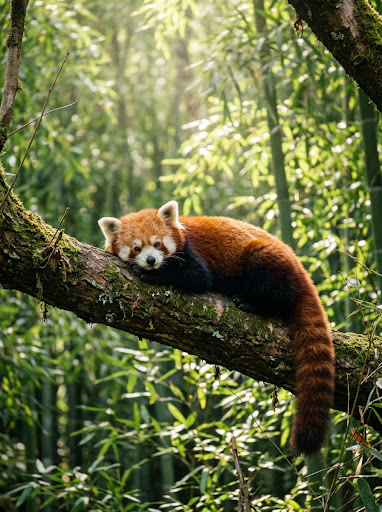
原圖 (Before)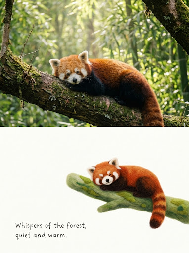
生成效果 (After)3:4 直式構圖，上下 50/50 雙拼。上半部為真實藝術攝影；下半部轉化為「扁平 2.5D 構圖 ＋ 小尺度微縮主體 (佔 20–25%) ＋ 大面積純淨暖白留白」的手工針氈羊毛插畫，兼具天鵝絨般的起毛質感、鮮活治癒配色與溫柔手寫句。
Turn the uploaded photograph into an independent high-end exhibition poster in a 3:4 vertical composition, split into two regions of exactly equal height (50% upper, 50% lower). Upper half: Faithfully display the original photograph, preserving the subject's identity, pose, realistic textures, and natural lighting with refined editorial grading suitable for a contemporary art publication or gallery monograph. Extend the environment naturally without distortion. Lower half: Reconstruct the photograph's key emotional essence into a minimalist, poetic Needle-Felted Wool Storybook Illustration. Boldly remove 60-70% of background clutter and secondary details. Adopt a flat 2.5D composition with minimal ground plane rather than a realistic 3D diorama. The wool felt subject is intentionally scaled down to occupy only about 20-25% of the panel, resting quietly within vast, pure warm-white deliberate negative space. Showcase authentic needle-felting craftsmanship: ultra-short, dense, soft wool fibers, a velvety matte felted surface, delicate fuzzy halos along soft contour edges, and gentle handcrafted warmth. Re-synthesize the color palette using the brightest, most vibrant, and healing tones extracted from the photo, elevated in clarity and brightness without neon saturation. Add a tiny, tender handwritten poetic phrase near the felted vignette. Strictly avoid: Literal scene replication, crowded composition, realistic 3D miniature diorama, plastic CGI render, dark muddy vintage filters, oversaturated candy colors, or generic cartoon templates.
3:4 vertical composition, split panel diptych, upper half realistic photography, lower half needle felted storybook illustration, (upper panel: high-end gallery photography, authentic textures, refined color grading, editorial art exhibition photo:1.1), (lower panel: handcrafted needle felted wool illustration, miniature subject occupying 20 percent of frame, flat 2.5D picture book composition, vast pure warm white negative space, extremely soft fuzzy wool fiber texture, velvety felt surface, delicate handcrafted felt contours:1.3), vibrant fresh healing color palette, bright clean tones, tender sparse handwritten text, minimalist editorial poster design, masterpiece, best quality, ultra-detailed
(worst quality, low quality:1.4), (smooth vector:1.2), 3D render, cgi, glossy plastic, realistic 3D diorama, complex background clutter, crowded frame, full frame filled, dark muddy colors, drab vintage filter, oversaturated neon, cheap cartoon, ugly anatomy, watermark, logo
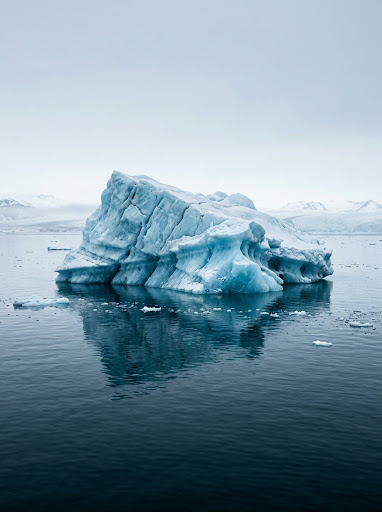
原圖 (Before)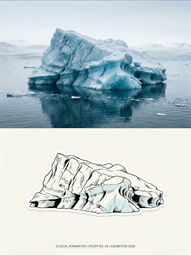
生成效果 (After)3:4 直式構圖，上下 50/50 雙拼。上半部為展覽級寫實原相；下半部將主體重新概括為「米白底色 ＋ 中心手繪黑線貼紙圖形 ＋ 局部淺冰藍點綴 ＋ 大面積負空間」，邊緣極簡小字，極具北歐與日系獨立刊物設計感。
Turn the uploaded photograph into an independent high-end design exhibition poster in a 3:4 vertical composition, split into two regions of exactly equal height (50% upper, 50% lower). Upper half: Faithfully display the original photograph, preserving the subject's identity, pose, realistic textures, and natural lighting with refined editorial grading suitable for an art magazine or independent publication monograph. Extend the background environment naturally without distorting the subject. Lower half: Reconstruct the primary subject into a refined, minimalist hand-drawn graphic with a distinct die-cut sticker aesthetic, floating in the center of vast, clean off-white negative space. Strip away all unnecessary background and cluttered objects; do not recreate the full scene. Distill only the subject's essential contours, gesture, and identifiable proportions into a compact, restrained focal graphic. Render with clean, organic black hand-drawn linework and solid silhouette accents. The palette is strictly minimalist: pristine off-white/cream paper base, crisp black ink, and a subtle, restrained touch of pale ice-blue (light glacial cyan) extracted from the photo as the sole accent splash. Place tiny, understated editorial annotations or small text quietly along the outer edge or corner so they never compete with the central graphic. Strictly avoid: Scene replication, crowded composition, full-frame clutter, commercial sticker clipart, multi-color rainbow palette, 3D renders, digital gradients, and aggressive marketing typography.
3:4 vertical composition, split panel diptych, upper half realistic photography, lower half minimalist hand-drawn graphic sticker poster, (upper panel: high-end gallery photography, authentic textures, refined color grading, editorial art exhibition photo:1.1), (lower panel: minimalist graphic design, hand-drawn black ink outline, die-cut sticker aesthetic, small centered graphic subject, immense clean off-white negative space, pure cream paper background, subtle pale ice blue accent color splash:1.3), high contrast monochrome with pale cyan touch, tiny understated typography tucked in corners, elegant indie design zine poster, masterpiece, best quality, ultra-detailed
(worst quality, low quality:1.4), (smooth vector:1.2), 3D render, cgi, glossy plastic, colorful, rainbow colors, bright saturated colors, complex busy background, crowded composition, full frame filled, heavy realistic painting, digital gradient, commercial advertising banner, cheap cartoon, ugly anatomy, watermark, logo
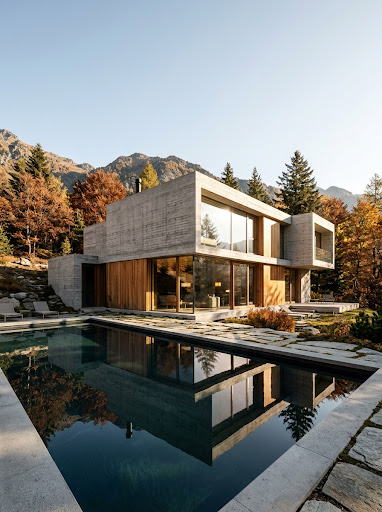
原圖 (Before)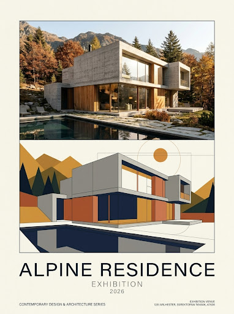
生成效果 (After)3:4 直式構圖（橫相上下 50:50 / 直相左右分割）。一邊忠實呈現當代藝術攝影；另一邊將建築與風景線條重構為純淨幾何色塊、細線條與象牙白底色，搭配簡約瑞士排版標題與年份，展現低調奢華與博物館級視覺。
Turn the uploaded photograph into an independent high-end minimalist design exhibition poster in a 3:4 vertical format. Adaptive Layout: - If the uploaded photo is landscape/horizontal, split the canvas 50:50 horizontally into upper and lower panels. - If the uploaded photo is portrait/vertical, split the canvas 50:50 vertically into left and right panels. Photo Panel: Faithfully preserve the original photograph, maintaining the subject's form, realistic textures, natural lighting, and authentic color atmosphere with refined, subtle color grading suitable for a contemporary art photography exhibition. Naturally extend the environment without distorting the subject. Graphic Panel: Reinterpret the subject's most recognisable contours and architectural/structural lines into a simplified abstract geometric composition. Use crisp geometric shapes (circles, rectangles, clean curves), solid flat color blocks, fine hairline strokes, and generous negative space. The shapes should be abstract yet instantly recognisable, derived directly from the color palette of the photo. Typography & Layout: Set against a light neutral background (ivory / warm off-white) with generous margins and balanced editorial spacing. Add minimal, sophisticated typography: a concise capitalized English title "[TITLE]" and year "[YEAR]" (e.g. 2026). Reflect high-end Swiss graphic design, contemporary art museum art direction, quiet luxury, and refined spatial breathing room. Strictly avoid: 3D render, glossy gradients, neon glow, shiny vectors, cartoon style, commercial marketing clutter, complex busy illustration, or distorted anatomy.
3:4 vertical composition, split panel contemporary art poster, (one half realistic photography, authentic textures, refined color grading, museum exhibition photo:1.1), (other half abstract geometric composition, flat color blocks, clean geometric lines, circles and rectangles, minimalist swiss graphic design, bauhaus influence:1.3), unified harmonious color palette extracted from photo, ivory off-white background, spacious negative space, minimalist editorial typography, fine numbers, quiet luxury, gallery exhibition catalog design, masterpiece, best quality, ultra-detailed
(worst quality, low quality:1.4), (smooth vector cartoon:1.2), 3D render, cgi, glossy plastic, gradients, neon glow, crowded composition, full frame filled, busy clutter, commercial advertising template, cheap clip art, ugly anatomy, watermark, logo
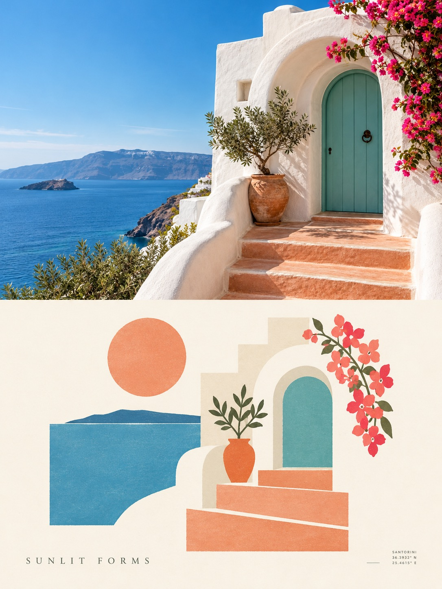
生成效果 (After)3:4 直式構圖，上下 50/50 雙拼。上半部為真實藝術攝影；下半部採用「完形簡化 (Gestalt-based Reduction) ＋ 幾何拼貼 ＋ 趣味現代主義」，提煉單一核心視覺錨點，結合陽光鮮活配色（天藍、水綠、珊瑚橘、暖黃）與大面積暖白留白，展現國際設計工作室與建築出版物般的秩序美感。
Create a separate, independent premium minimalist design poster from the uploaded photo in a 3:4 vertical composition, with the upper and lower sections strictly divided 1:1, each occupying exactly 50% of the canvas height. Upper half: Preserve the original photograph, maintaining the subject's structure, realistic texture, natural lighting, and authentic color atmosphere with subtle, sophisticated color grading suitable for an independent art photography publication. Naturally extend the surroundings if needed to fit the frame without distorting the subject. Lower half: Reconstruct the emotional essence and structural metaphor of the subject into an avant-garde design using abstract architectural silhouettes, geometric collage, and playful modernism. Apply Gestalt-based reduction: strip away all non-essential clutter, compressing the subject into a single, memorable core visual anchor. Position the subject freely (off-center, edge-aligned, or floating) surrounded by generous, airy negative space on a clean warm-white or ivory background. Balance crisp modernist geometry with subtle handmade warmth and slightly organic edges. Re-synthesize the brightest, most vibrant, and sunlit colors extracted from the photo (such as clear sky blue, fresh aqua, soft leaf green, sunny yellow, coral, and peach pink), accented with warm touches of sunlight. Incorporate small, restrained contemporary editorial typography (a micro title, tiny number, or exhibition annotation) quietly integrated into the negative space like a high-end architectural identity label. Strictly avoid: Photorealistic rendering in the lower half, full-scene tracing, cluttered backgrounds, information overload, childish cartoon aesthetics, 3D renders, dark muddy Morandi tones, cheap candy palettes, or generic commercial poster templates.
3:4 vertical composition, split panel diptych, upper half realistic photography, lower half playful modernist geometric illustration, (upper panel: high-end gallery photography, authentic textures, refined color grading, independent art monograph photo:1.1), (lower panel: playful modernism, abstract architectural silhouette, gestalt negative space design, geometric collage, single core visual anchor, vast pure warm white negative space, refined organic geometry:1.3), vibrant sunlit color palette, warm coral orange and sky blue accents, fresh luminous tones, clean ivory background, micro editorial typography, contemporary swiss design influence, masterpiece, best quality, ultra-detailed
(worst quality, low quality:1.4), (smooth vector:1.2), 3D render, cgi, glossy plastic, full scene realistic replication, busy cluttered background, crowded frame, full frame filled, dark muddy gray tones, faded morandi colors, childish cartoon, ugly anatomy, watermark, logo
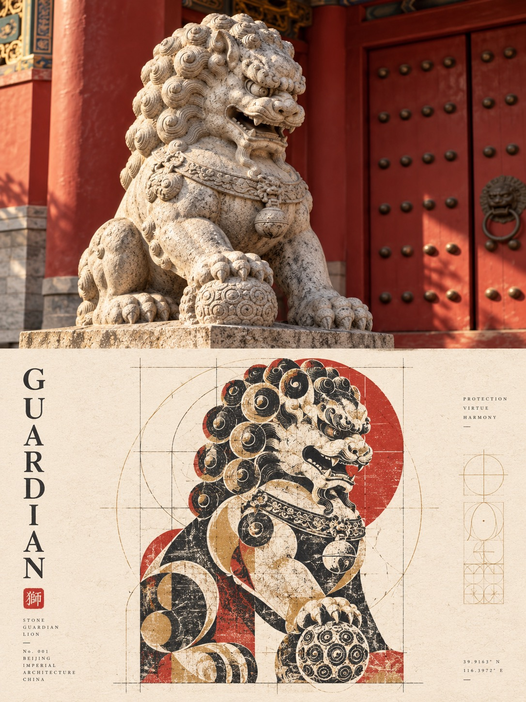
生成效果 (After)3:4 直式構圖，上下 50/50 雙拼。上半部為博物館級藝術攝影；下半部採用「民俗文化圖錄 ＋ 金石拓印痕跡 ＋ 現代幾何設計」，將主體建立在嚴謹的幾何比例系統（切線、嵌套、同軸對齊），內部注入木版拓印與乾刷絲網印刷的不均勻墨痕，結合明亮紙色、深骨架色與提煉點睛色，展現東方金石氣魄與當代瑞士網格秩序的共融。
Please turn the uploaded photo into an independent premium-designed poster in a 3:4 vertical composition, strictly divided into two equal-height sections, with the upper and lower halves each occupying exactly 50% of the canvas. Upper half: Preserve the original photograph, maintaining the subject's structure, realistic texture, natural lighting and shadows, and original color atmosphere, with subtle high-end photographic color grading suitable for an art publication or exhibition monograph. Extend the surrounding background naturally if needed without stretching or altering the subject. Lower half: Extract the most recognizable subject, silhouette, and narrative essence from the photograph, reconstructing it into an authoritative graphic composition that harmonizes an antique rubbing print, a folk-culture catalog, and rigorous modern geometric design. Retain only one core visual motif and a minimal number of auxiliary forms carrying true narrative weight through silhouette, negative space, and symbolic abstraction. Construct the layout upon a strict geometric framework (circles, squares, arcs, or shared axes derived from the subject's anatomy) ensuring all shapes, typography, and negative space align with common tangencies, nesting, or proportional progression. Infuse the graphic interior with hybrid woodblock rubbing, dry-brush screenprint, and vintage catalog textures—featuring broken ink density, abrasion marks, and exposed paper grain—while maintaining crisp, razor-sharp outer geometric contours. Employ a clean, restrained print palette: a luminous light paper background, one deep anchor color for structural bone, and 1 to 2 spirited theme colors extracted from the photograph. Integrate minimal, sophisticated English editorial typography and micro-annotations along the geometric axes and margins without competing with the central graphic. Strictly avoid: Full scene photorealism in the lower half, random collage clutter, arbitrary traditional pattern filler, evenly dispersed layouts, realistic illustration, muddy simulated aging, or generic graphic templates.
3:4 vertical composition, split panel diptych, upper half realistic photography, lower half antique woodblock rubbing print and modern graphic design, (upper panel: high-end gallery photography, authentic textures, refined color grading, art exhibition catalog photo:1.1), (lower panel: antique rubbing print, woodblock print texture, dry-brush screenprint, rigorous geometric grid layout, folk-culture catalog aesthetic, single core visual motif, crisp geometric boundaries with distressed ink interior, tactile paper texture:1.3), restrained print color palette, deep anchor tone with vibrant extracted spot colors, light unbleached paper background, minimal english architectural typography, precision swiss and folk art fusion, masterpiece, best quality, ultra-detailed
(worst quality, low quality:1.4), (smooth vector cartoon:1.2), 3D render, cgi, glossy plastic, photorealistic replication in lower panel, messy random clutter, arbitrary traditional pattern filler, crowded frame, full frame filled, muddy gray aging, dirty brown filter, cheap cartoon, ugly anatomy, watermark, logo
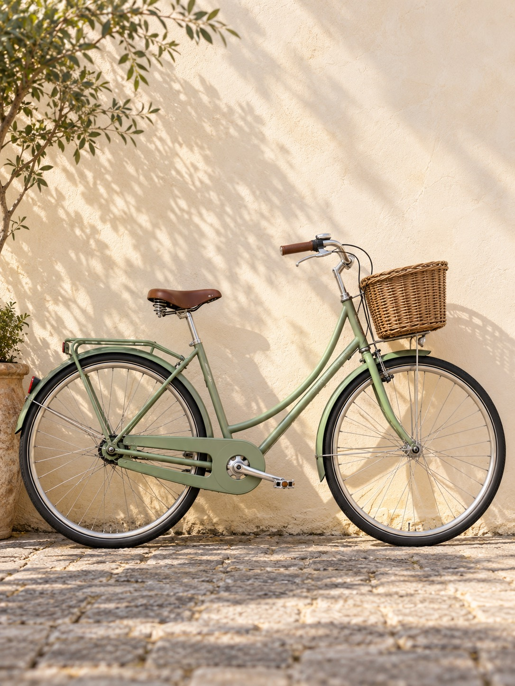
原圖 (Before)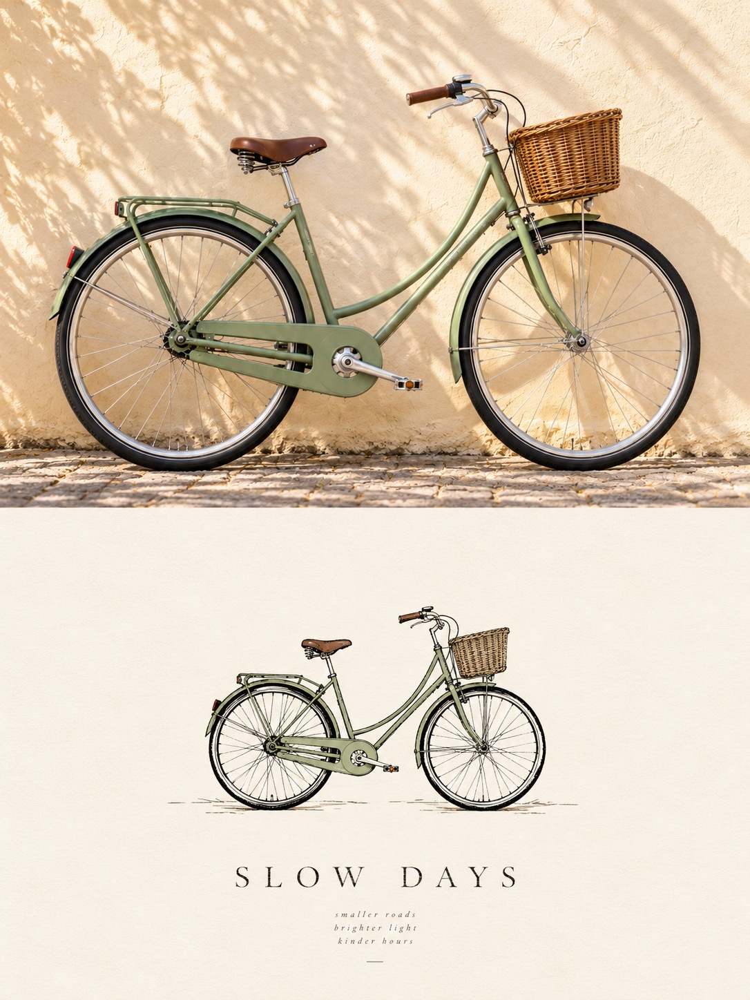
生成效果 (After)3:4 直式構圖，上下 50/50 雙拼。上半部為當代生活風格攝影；下半部將主體高度提煉為「中心小型手繪貼紙感圖形 (Spot Illustration) ＋ 超大面積負空間 ＋ 無彩色黑白主導 ＋ 極小面積單一淡色點睛 (如淡橄欖綠、淺冰藍)」，搭配邊緣詩性微排版，呈現安靜、珍視且極具高級感的獨立刊物美學。
Turn the uploaded photograph into an independent high-end lifestyle design poster in a 3:4 vertical composition, strictly divided into two equal-height sections (50% upper, 50% lower). Upper half: Faithfully preserve the original photograph, maintaining the subject's identity, pose, realistic textures, natural lighting, and original atmosphere with subtle editorial color grading suitable for an art magazine or contemporary exhibition publication. Naturally extend the environment if necessary without distorting the subject. Lower half: Reconstruct the emotional essence and core silhouette of the subject into a refined, minimalist Spot Illustration with a clean, handcrafted sticker-like graphic aesthetic, placed quietly within immense deliberate whitespace (negative space). Do not replicate the full scene or trace every object. Distill only the primary soul features into a compact, restrained single focal graphic. Render with organic black hand-drawn linework, clean solid white/pale shapes, and subtle geometric simplicity. The palette is strictly achromatic-led: pure white or soft warm-ivory paper background, black/charcoal lines, and only a tiny single accent splash of a delicate, airy pastel tone extracted from the photo (such as clear ice blue, sky cyan, pale petal pink, or soft sage green) applied with extreme restraint to a single focal element. Add sparse, understated editorial typography (a single word, coordinates, or a tiny poetic caption tailored specifically to this photo's story) resting quietly along the margin. The final impression must feel peaceful, cherished, editorial, and sophisticated like an independent lifestyle monograph. Strictly avoid: Full scene reproduction, cluttered backgrounds, multi-color rainbow palettes, heavy color blocks, full-frame filling, multiple competing focal points, childish cartoon tropes, cheap clipart stickers, or commercial poster templates.
3:4 vertical composition, split panel diptych, upper half realistic photography, lower half minimalist spot illustration poster, (upper panel: high-end gallery photography, authentic textures, refined color grading, editorial art exhibition photo:1.1), (lower panel: minimalist spot illustration, handcrafted black ink sticker-like graphic, single compact visual anchor, vast pure warm white negative space, pristine ivory paper background, single subtle pale ice blue or soft pastel accent color splash:1.3), achromatic monochrome base, delicate organic contours, tiny understated editorial typography along margins, independent lifestyle zine design, quiet luxury, masterpiece, best quality, ultra-detailed
(worst quality, low quality:1.4), (smooth vector cartoon:1.2), 3D render, cgi, glossy plastic, complex full scene replication, cluttered background, crowded frame, full frame filled, multiple subjects, colorful rainbow palette, heavy saturated blocks, cheap stock clipart, childish illustration, commercial banner, ugly anatomy, watermark, logo
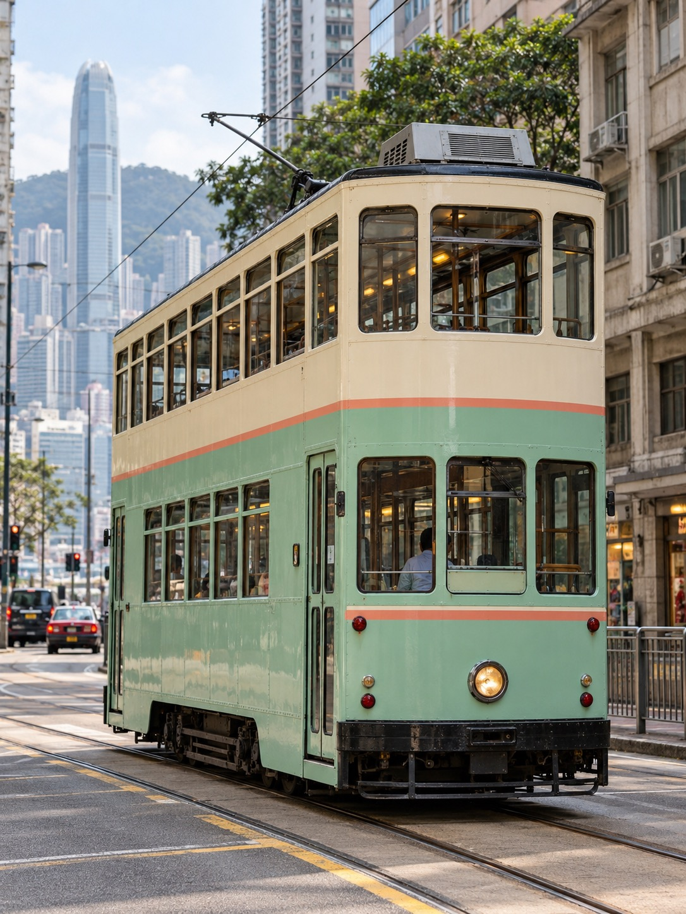
原圖 (Before)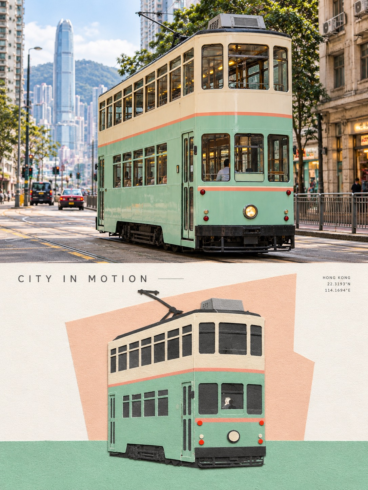
生成效果 (After)3:4 直式構圖，上下 50/50 雙拼。上半部為藝術展覽攝影；下半部採用「剪紙拼貼 (Cut-paper collage) ＋ 全寬水平色場基座 (Solid Horizontal Base)」，構建 [近白留白－局部幾何背景板－主體剪紙－純色基座] 的 4 層純平面層疊空間，搭配柔和清爽的粉彩色調與邊緣微排版，極具當代設計質感。
Turn the uploaded photograph into an independent high-end design exhibition poster in a 3:4 vertical composition, strictly divided into two equal-height sections (50% upper, 50% lower). Upper half: Faithfully display the original photograph, maintaining the subject's identity, pose, realistic textures, natural lighting, and original atmosphere with subtle, sophisticated color grading suitable for an art magazine or exhibition monograph. Extend the environmental background naturally if needed without distorting the subject. Lower half: Reconstruct the subject into a refined cut-paper collage based on a clear split color-field composition. Boldly eliminate cluttered background and secondary objects. The lower panel structure consists of: vast near-white negative space in the upper portion, and a solid, edge-to-edge flat horizontal color-field base grounding the bottom with zero perspective, no gradients, and no realistic table edges. The subject is abstracted into layered, flat cut-paper shapes that anchor across this horizontal color divide, optionally backed by a single geometric color backplate to establish a 4-tier flat space: [Near-white negative space - Local geometric backplate - Main paper-cut subject - Solid color base]. Showcase handcrafted paper textures: subtle irregular scissor-cut contours, delicate paper grain, and tactile overlapping paper layers without heavy 3D drop shadows. Extract 2 to 4 fresh, clean colors from the photograph, synthesized into a gentle, luminous pastel palette. Add minimal, restrained editorial typography tucked quietly along the color-field boundary or top negative space. Strictly avoid: Full scene photorealism, complicated backgrounds, realistic 3D perspective, gradients, heavy dark shadows, crowded compositions, childish cartoon tropes, or generic digital vector templates.
3:4 vertical composition, split panel diptych, upper half realistic photography, lower half cut paper collage illustration, (upper panel: high-end gallery photography, authentic textures, refined color grading, editorial art exhibition photo:1.1), (lower panel: split color field composition, cut paper collage art, solid full-width flat horizontal color block base at bottom, vast near-white negative space at top, layered paper silhouettes, delicate paper fiber grain, handcrafted scissor-cut edges, flat 2D graphic space without drop shadow:1.3), soft luminous pastel color palette, geometric color backplate accent, minimal modern editorial typography along color boundary, refined graphic design zine, masterpiece, best quality, ultra-detailed
(worst quality, low quality:1.4), (smooth vector cartoon:1.2), 3D render, cgi, glossy plastic, realistic 3D perspective, gradients, heavy drop shadows, complex background clutter, crowded frame, full frame filled, dark muddy gray tones, dreary brown filter, cheap cartoon, ugly anatomy, watermark, logo